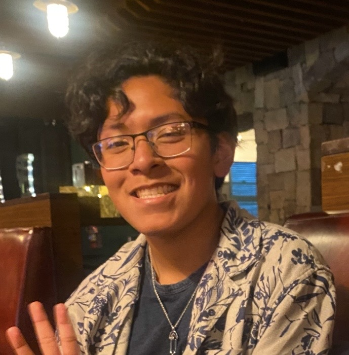

Darian Carrillo
Im a sophmore who is majoring emerging media, I have good crafting skills and I have produced works of crochet such as blankets,
scarfs and charms.I love making small cute things even once made a
business out of it until I stopped in highschool.